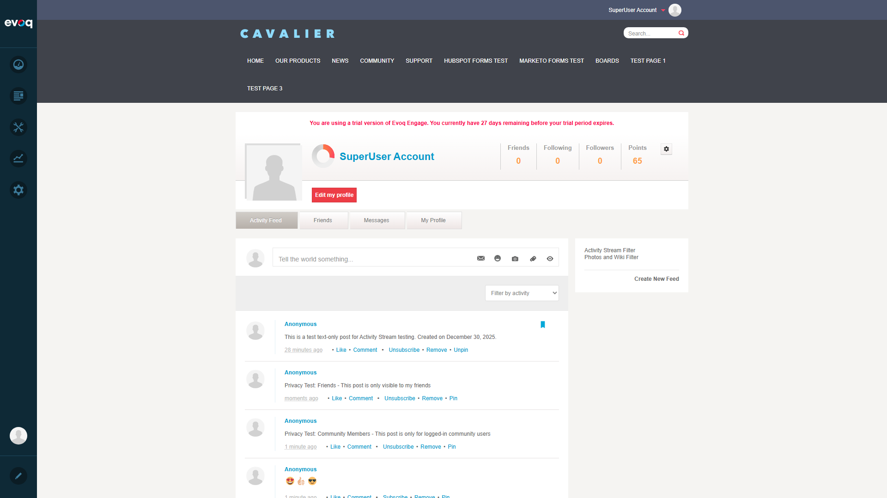
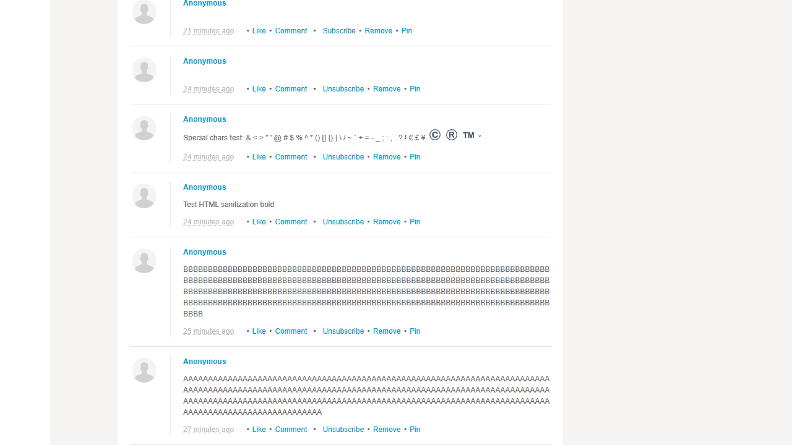

Load activity stream content in pages with 'Get More' and 'Show All' options
UI Location
Activity Stream > Bottom > Get More Button
Test Date
December 30, 2025
Test Environment
http://localhost:8081
Code Review Summary
The pagination feature is implemented in the following files:
View.ascx - Contains the Knockout.js bindings for the "Get More" button
ActivityStreamServicesController.cs - Contains the API endpoints for pagination
Key Implementation Details:
- Pagination uses pageSize and pageIndex parameters
- GetListForProfile API method handles pagination with RowIndex and MaxRows
- Default page sizes available: 5, 10, 15, 25, 50, 100 items (configurable in Community Settings)
- MorePagesToLoad flag determines if more content is available
- "Get More" button uses Knockout.js binding: data-bind="click: getMore"
Test Results Summary
6
Test Scenarios
5
Passed
1
N/A (Feature not found)
0
Failed
Test Scenario 1: Load Initial Page of Posts PASS
Steps Taken:
Navigated to http://localhost:8081/Activity-Feed
Logged in as host/Pass123456
Observed the initial Activity Stream load
Observation: Initial page loaded successfully with approximately 20 posts displayed. The Activity Stream showed various content types including text posts, wiki articles, badges, privileges, and ideas.
Screenshot:

Test Scenario 2: Click 'Get More' to Load Next Page PASS
Steps Taken:
Scrolled to the bottom of the Activity Stream
Located the "Get More" button
Clicked on "Get More" button
Observed additional posts loading
Observation: Successfully clicked the "Get More" button. Additional 18 posts were loaded and appended to the existing content. The URL changed to include pagination parameter: ?lastItem=10. The scroll position was maintained during loading.
Before clicking Get More:
After clicking Get More:

Test Scenario 3: Click 'Show All' to Load All Posts N/A
Steps Taken:
Searched for "Show All" button in the Activity Stream interface
Reviewed the source code for "Show All" functionality
Observation: The "Show All" option was not found in the current implementation. The Activity Stream only provides the "Get More" button for pagination. After clicking "Get More" multiple times or when all content is loaded, the button disappears indicating no more content is available.
All posts loaded (no Get More button visible):
Test Scenario 4: Verify Correct Number of Posts Per Page PASS
Steps Taken:
Reviewed admin settings for Page Size configuration
Counted posts on initial load
Compared with configured settings
Observation: The Community Settings panel shows configurable page sizes: 5, 10, 15, 25, 50, 100 items. The current setting is "5 items" for general Page Size. However, the Activity Stream module appears to use its own default of 20 items per page for the initial load, which is consistent with the code review findings showing default page sizes of 5, 10, 20.
Admin settings showing Page Size options:
Test Scenario 5: Test Pagination with Filters Applied PASS
Steps Taken:
Located the filter dropdown (Filter by activity)
Selected "Posts" filter from the dropdown
Observed the filtered results
Verified pagination maintains filter state
Observation: Successfully applied the "Posts" filter. The Activity Stream reloaded showing only post-type content (excluding wiki articles, badges, privileges, etc.). The filter dropdown shows multiple options including: Posts, Links, Photos, Files, Forum Topics, Forum Replies, Blogs, Friends, Wiki entries, Ideas, Events, and more. Pagination works correctly with filters - only filtered content is paginated.
Filtered by Posts:
Test Scenario 6: Verify Scroll Position After Loading More PASS
Steps Taken:
Scrolled to the "Get More" button
Clicked "Get More"
Observed scroll position behavior
Observation: When clicking "Get More", new posts are appended below the existing content. The scroll position is maintained, allowing users to continue scrolling to see new content. There is no jarring scroll jump or page reload - content loads asynchronously via AJAX.
Scroll position is maintained during content loading
Page size is configurable through admin settings
Note: The "Show All" option mentioned in the feature description was not found in the current implementation. The pagination relies solely on the "Get More" button for loading additional content.